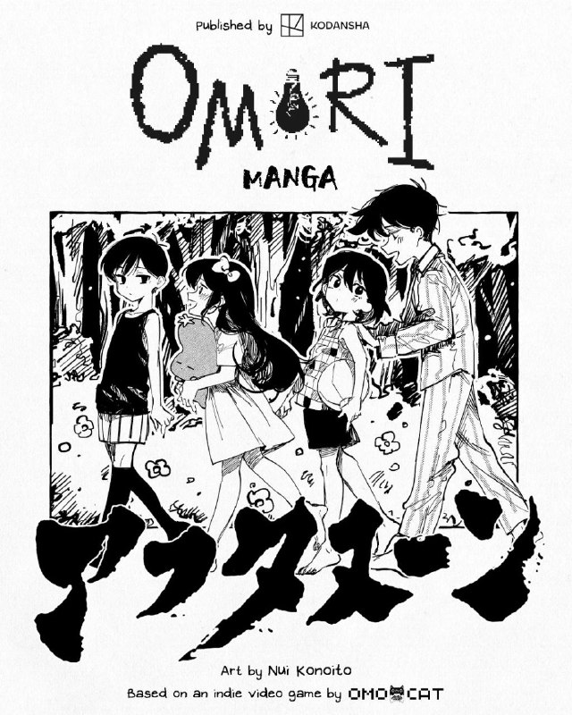
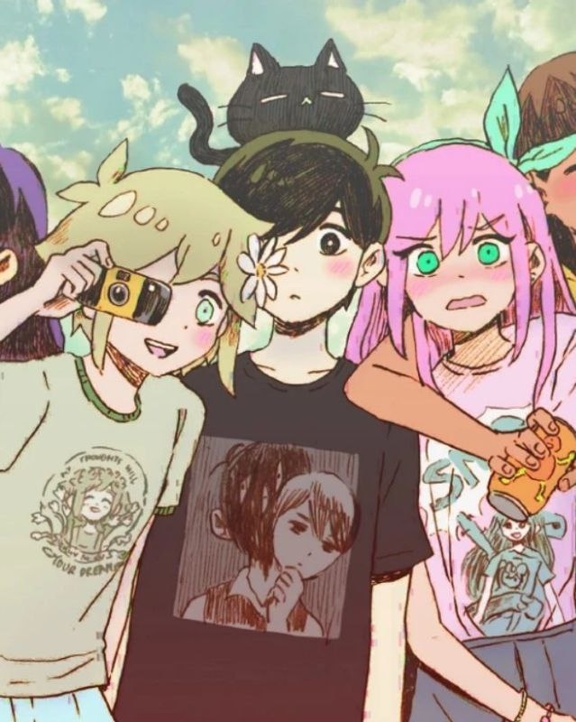
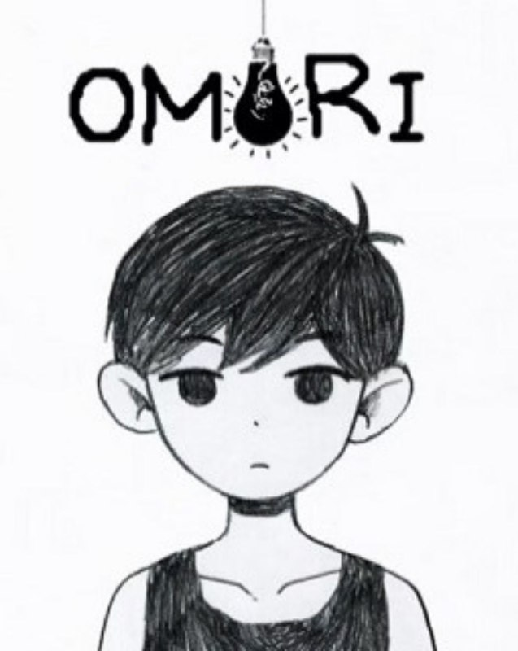

Об игре
Omori — компьютерная ролевая игра, разработанная инди-студией Omocat. Вышла 25 декабря 2020 года на персональные компьютеры, а 17 июня 2022 года была портирована на Nintendo Switch, PlayStation 4 и Xbox One. Действие игры разворачивается в двух мирах — реальном и сюрреалистическом мире снов.
Последние новости

Манга по игре OMORI
26.05.2024
Компания Omocat объявила, что предстоящая манга-адаптация игры OMORI начнет выходить 25 июня 2024 года в журнале Kodansha ''Monthly Afternoon''.

Выход OMORI на Switch
26.05.2024
Компания Omocat объявила, что предстоящая манга-адаптация игры OMORI начнет выходить 25 июня 2024 года в журнале Kodansha ''Monthly Afternoon''.

Концерт в честь 3-летия
17.12.2021
Разработчик OMOCAT анонсировал выход игры OMORI на Nintendo Switch весной 2022 года. Также планируется релиз игры на PlayStation 4 и Xbox One.